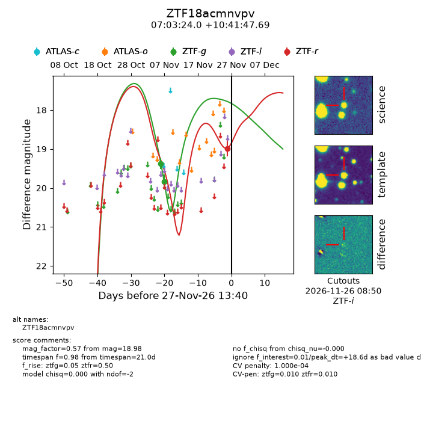
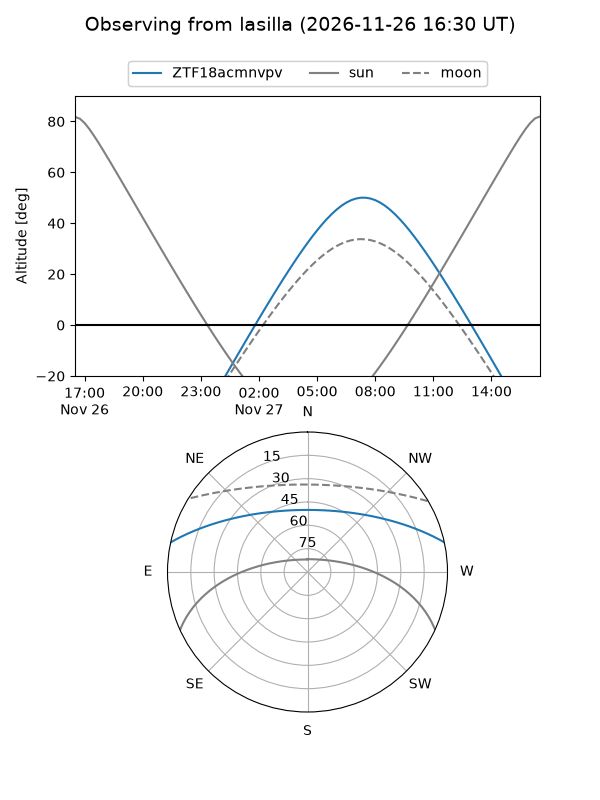
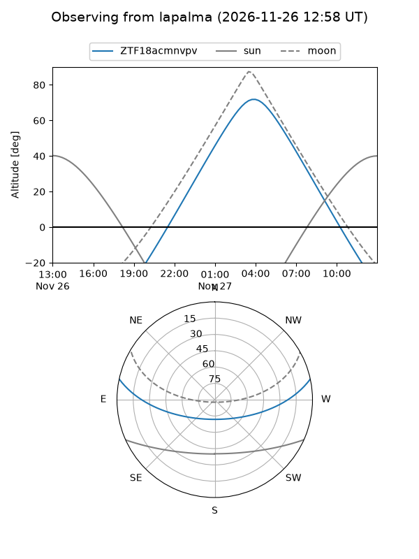
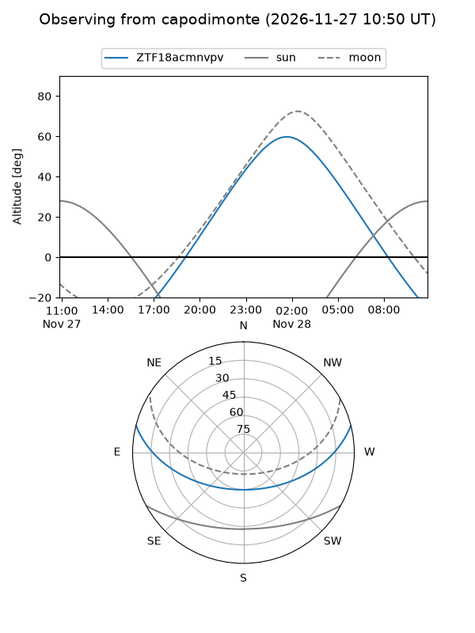
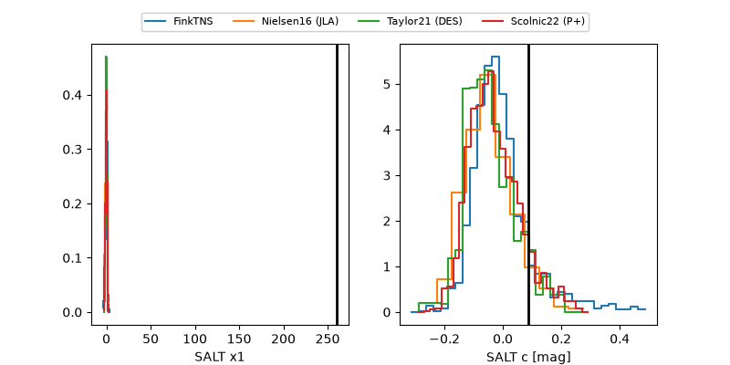

ZTF18acmnvpv
Target ZTF18acmnvpv at 2026-11-27 13:41
Aliases and brokers:
FINK-ZTF: ztf.fink-portal.org/ZTF18acmnvpv
Lasair-ZTF: lasair-ztf.lsst.ac.uk/objects/ZTF18acmnvpv
ALeRCE-ZTF: alerce.online/object/ZTF18acmnvpv
Direct TNS query: direct search
alt names
ZTF18acmnvpv (ztf,fink_ztf)
Coordinates:
equatorial (ra, dec) = 105.8500,+10.69658
equatorial (HMS+DMS) = 07:03:24.01,+10:41:47.69
galactic (l, b) = (204.7086,+7.48457)
Flags:
likely cv: !!
CV pen: 0.0001
peak dt: +18.6
Photometry:
last ztfg=19.84, ztfr=18.98
2 ztfg, 1 ztfr detections
Lightcurve

Visibility



Additional plots
